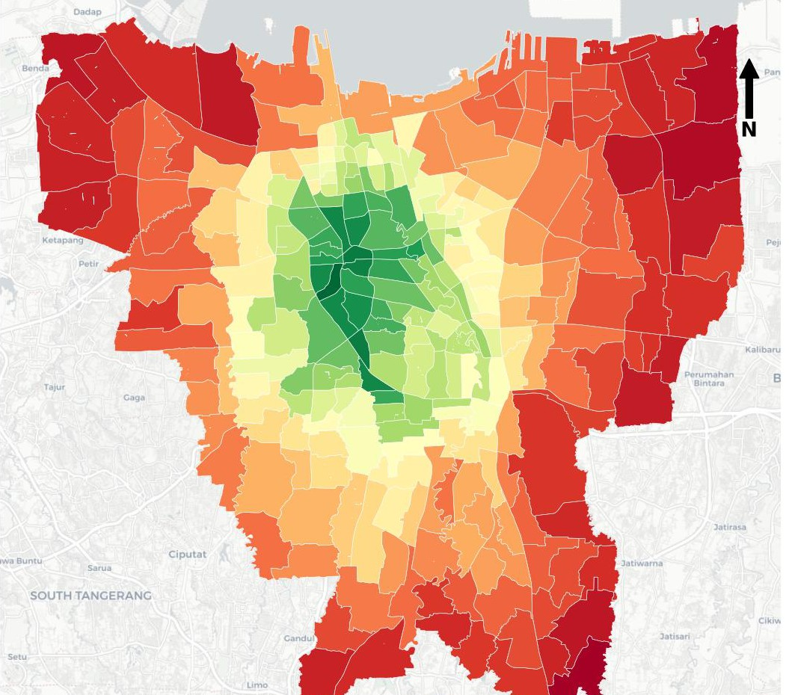
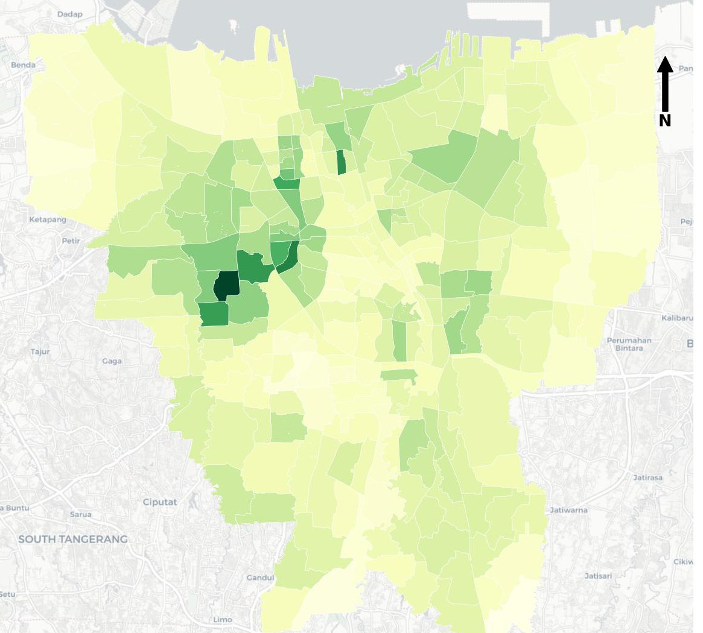
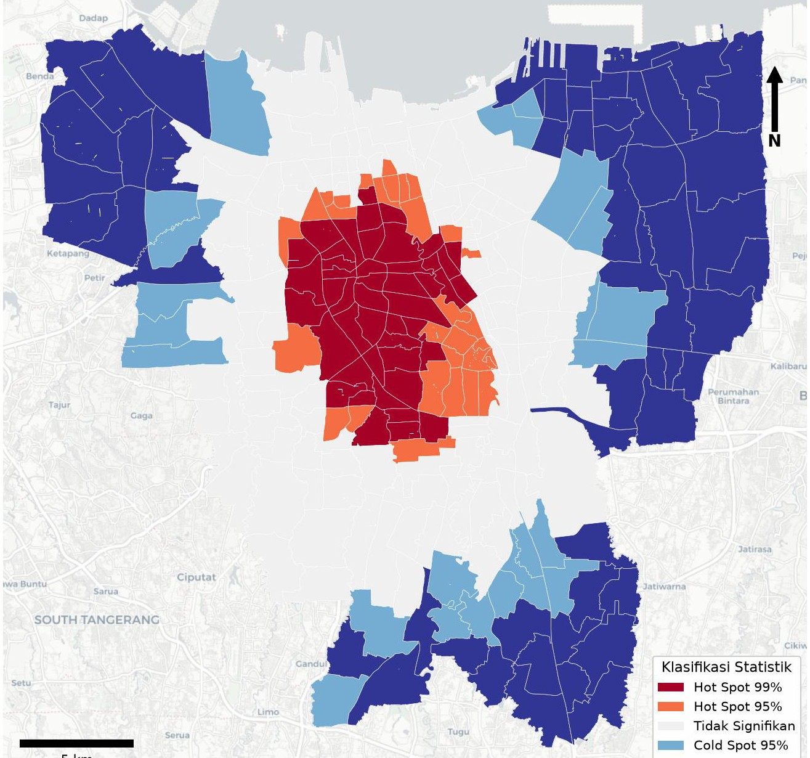
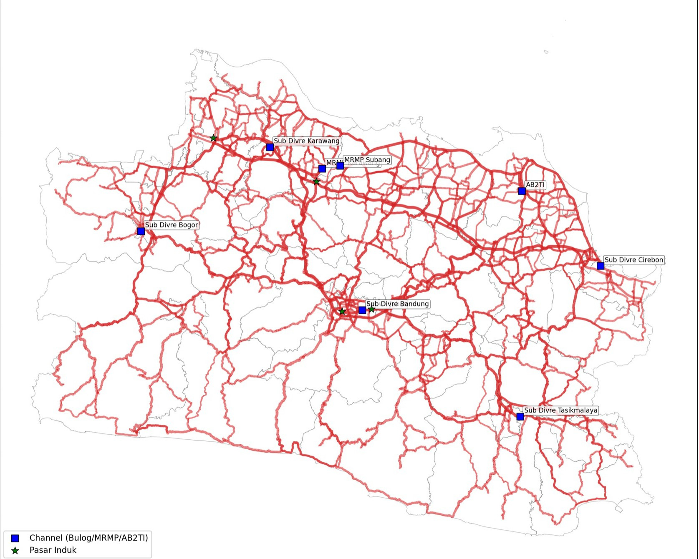
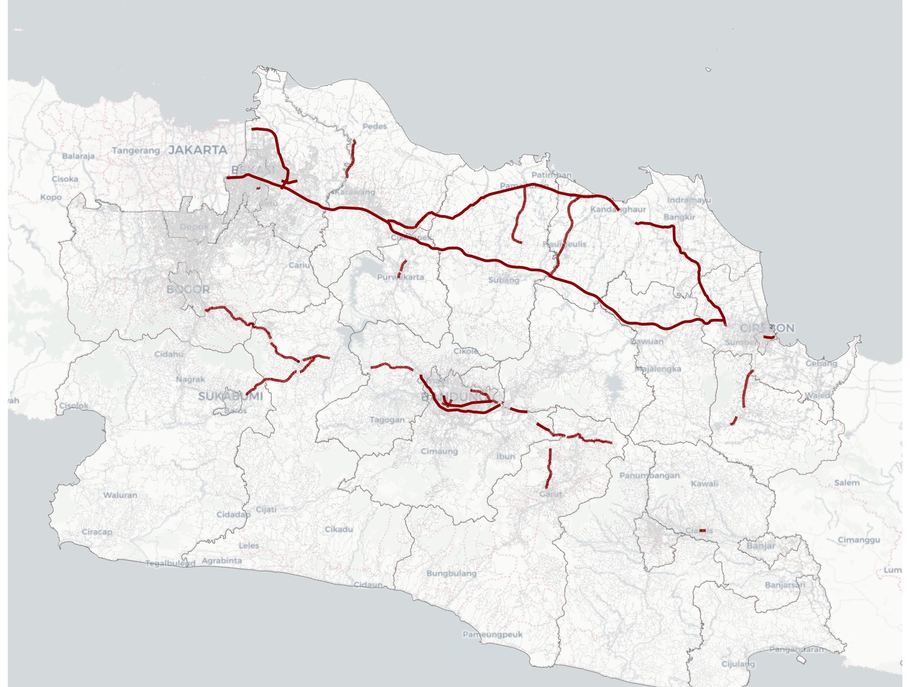
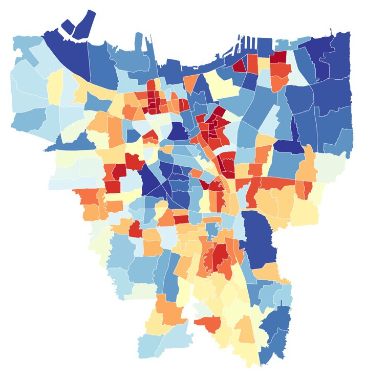
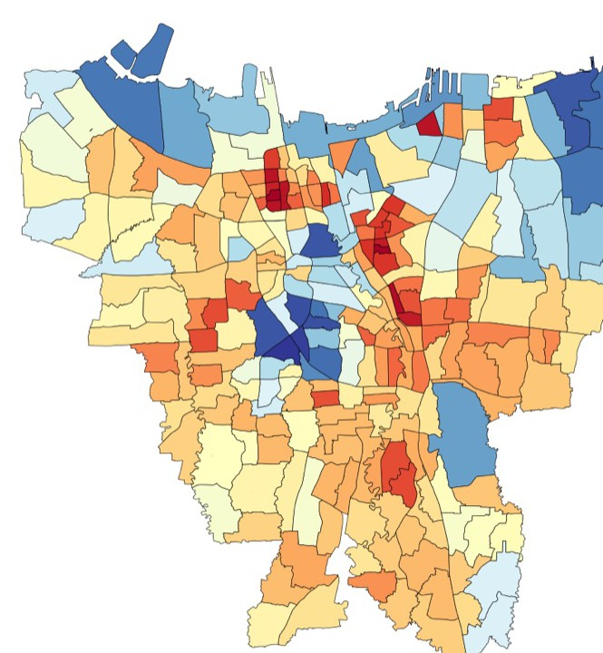
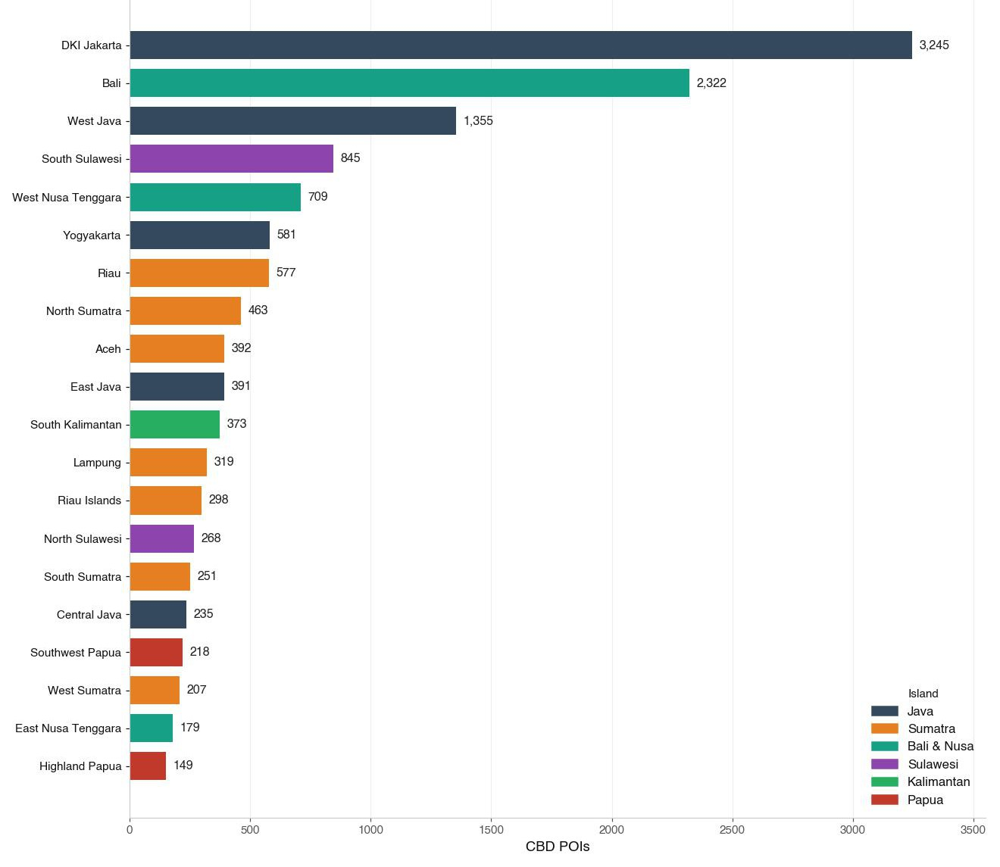
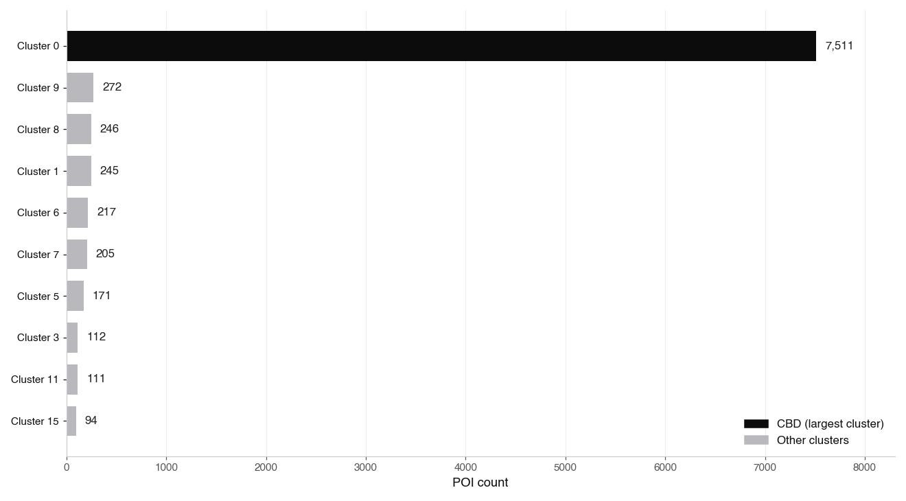

Selected work
GIS & Spatial Analysis
03 projects


Transit Accessibility in DKI Jakarta
Measuring how evenly residents can reach 27 essential urban facilities by public transit, and the marginal impact of Mikrotrans feeders on spatial equity.
Includes literature map Start data story →

Critical Roads for the Rice Supply Chain in West Java
Identifying the most critical road segments for West Java’s food security through multi-stage network-flow modeling over a 2.1-million-edge road network.
Includes literature map Start data story →

Satellite Proxy for Low-Income Communities in DKI Jakarta
Mapping all 261 DKI Jakarta urban villages as a proxy for low-income communities (MBR) from public satellite imagery alone, AlphaEarth embeddings with two-stage validation and temporal harmonization (2017–2024).
Includes literature map Start story →Data Analysis
01 project

Mapping Indonesia’s Business Centers with DBSCAN
Identifying the Central Business District of every Indonesian province by density-based clustering of 91,940 commercial POIs from OpenStreetMap, with a Jakarta deep-dive and two interactive maps.
Includes literature map Start data story →Interactive Dashboards
Tableau PublicInteractive Dashboard Gallery
A growing set of interactive Tableau dashboards built during the Pacmann data-science bootcamp, covering healthcare operations, real-estate listings, and exploratory data analysis.
View on Tableau Public ↗